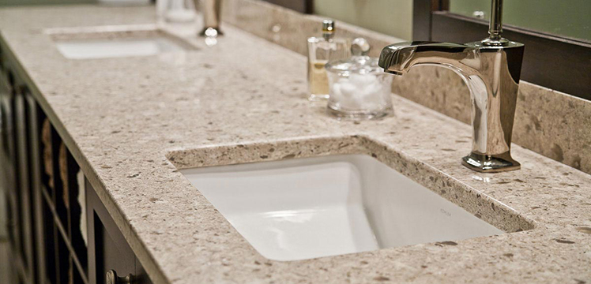

| Tile & Stone | Flooring | Whirlpool Tubs | Showers | Fixtures |
| Countertops | Cabinets | Exhaust fans | Lighting | Water damage |
Services > Countertops
Choosing the right kitchen countertop can be tricky (and expensive!). Before splurging on such a big update, check out the pros and cons of the top kitchen countertop materials to help you select the right one for your space.
Some are practically maintenance free, engineered quartz countertops are stain, acid, scratch, heat and impact resistant and, thanks to their non-porous surface, don't need to be sealed like natural stone countertops. Available in a wide range of colors and patterns, quartz typically ranks close in popularity to the perennial top choice: granite. We can help you decide!